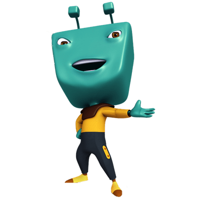
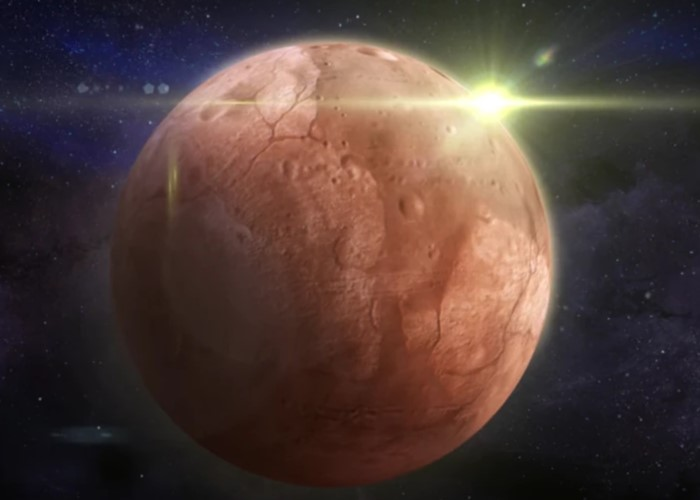

| About Me | Menu | Contact Me | ||
|---|---|---|---|---|
Sekilas Tentang SayaHai, saya Adudu, Sebagai seorang alien penjual susu di Planet Sutera, saya menjalani kehidupan yang sederhana namun penuh semangat. Meskipun pekerjaan ini tidak gampang, saya menemukan kebahagiaan dalam memberikan layanan kepada para pelanggan alien saya. Namun, satu hari, kehidupan saya berubah drastis saat saya mendapat ide untuk melalukan ekspansi bisnis ke planet lain. Saat sedang menonton TV, ada berita yang menayangkan tentang perbandingan tingkat komsumsi penduduk antar Planet, diantara semua planet saya berpikir bahwa Planet bumi memiliki penduduk yang cukup konsumtif. Disitulah kemudian saya memutuskan untuk memilih Bumi sebagai Planet untuk melebarkan sayap bisnis saya. Tanpa ragu-ragu, saya memutuskan untuk melakukan perjalanan ke Bumi, tempat saya percaya bahwa harapan dan kesempatan baru menunggu. Meskipun penuh dengan ketidakpastian dan tantangan, saya yakin bahwa tindakan ini adalah langkah yang tepat untuk melebarkan sayap bisnis sederhana ini. Dengan hati yang penuh harapan, tekad yang bulat, dan semangat yang tak tergoyahkan, saya, memulai perjalanan panjang menuju Bumi, siap menghadapi segala rintangan yang mungkin saya temui di sana, dan siap untuk menjalankan bisnis antar galaksi pertama di Planet ini. setelah cukup lama melalukan perdagangan di Bumi. Saya dibantu oleh robot yang saya temukan di TPU bantar gebang berfikiran untuk membuka beberapa cabang di tiap negara di Bumi |
Planet SuteraPlanet asal saya, Planet Sutera. Planet yang cukup makmur dari memanfatkan Sumber Daya Mineral |
|||
| copyright @ 2024 by Muhammad Arkaan Kharits | ||||